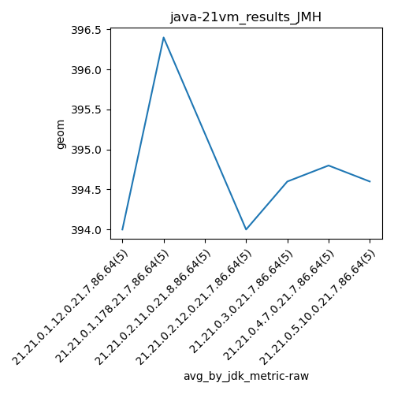
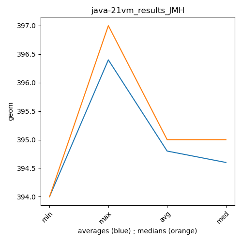

java-21 JMH
Context at bottom
/home/jvanek/git/benchmarks-in-nested-virtualisation-toolchain/final_results/vm_results/vm_results_RADARGUNs1
java-21
JMH
/home/jvanek/git/benchmarks-in-nested-virtualisation-toolchain/final_results/vm_results/vm_results_RADARGUNs3
java-21
JMH
/home/jvanek/git/benchmarks-in-nested-virtualisation-toolchain/final_results/vm_results/vm_results_DACAPO
java-21
JMH
/home/jvanek/git/benchmarks-in-nested-virtualisation-toolchain/final_results/vm_results/vm_results_J2DBENCH
java-21
JMH
/home/jvanek/git/benchmarks-in-nested-virtualisation-toolchain/final_results/vm_results/vm_results_SPECJBB
java-21
JMH
/home/jvanek/git/benchmarks-in-nested-virtualisation-toolchain/final_results/vm_results/vm_results_JMH
java-21
JMH
vm_results_JMH
final score
Expected number of java-21 JDKs: 7
1st avgmed_alljdks_metric:
/home/jvanek/git/benchmarks-in-nested-virtualisation-toolchain/final_results/result_processing.py /home/jvanek/git/benchmarks-in-nested-virtualisation-toolchain/final_results/vm_results/vm_results_JMH geom False
values: [396, 394, 393, 393, 394, 396, 397, 397, 397, 395, 395, 396, 395, 395, 395, 395, 394, 393, 393, 395, 395, 395, 395, 394, 394, 394, 395, 394, 395, 396, 395, 395, 394, 396, 393]

Expected number of iterations: 5
final number of values: 35 out of 35
Pass rate: 100.0%
values: (393, 397, 394.8, 395)

** accuracy from all jdks and runs
more is better
MIN: 393
MAX: 397
AVG: 394.8
MED: 395
Relative differences 1:
MIN-MAX: 1.0 %
MIN-AVG: 0.0 %
MIN-MED: 1.0 %
MAX-MIN: -1.0 %
MAX-AVG: -1.0 %
MAX-MED: -1.0 %
AVG-MED: 0.0 %
stored to java-21.properties. sort | uniq that!
2nd avgmed_by_jdk_metric:
values: [394.0, 396.4, 395.2, 394.0, 394.6, 394.8, 394.6]

values: [394, 397, 395, 394, 395, 395, 395]

values: (394.0, 396.4, 394.8, 394.6)
values: (394, 397, 395.0, 395)

** accuracy from all jdks where runs were avged
more is better
MIN: 394.0
MAX: 396.4
AVG: 394.8
MED: 394.6
Relative differences 1:
MIN-MAX: 1.0 %
MIN-AVG: 0.0 %
MIN-MED: 0.0 %
MAX-MIN: -1.0 %
MAX-AVG: -0.0 %
MAX-MED: -0.0 %
AVG-MED: -0.0 %
stored to java-21.properties. sort | uniq that!
** accuracy from all jdks where runs were medianed
more is better
MIN: 394
MAX: 397
AVG: 395.0
MED: 395
Relative differences 1:
MIN-MAX: 1.0 %
MIN-AVG: 0.0 %
MIN-MED: 0.0 %
MAX-MIN: -1.0 %
MAX-AVG: -1.0 %
MAX-MED: -1.0 %
AVG-MED: -0.0 %
stored to java-21.properties. sort | uniq that!
pass rates:
vm_results_JMH=100.0%
Context:
- vm_results
- JMH